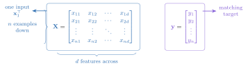
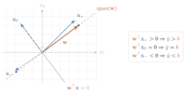
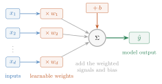
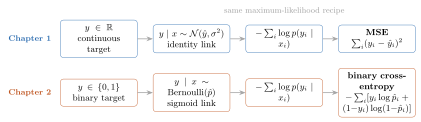

The core task of everything we will do in this course is to teach a computer to learn a function from examples. Before we can appreciate what is deep about deep learning, we need one complete, honest example of learning: a model, a loss, and an update rule. Linear regression is that example. It is the smallest model that contains the entire supervised learning story, and by the end of this chapter we will build it three ways: in closed form, by gradient descent from scratch, and with PyTorch modules. All three will agree, and you will know exactly why.
where each \(\featurepart{\vect{x}_i}\in\R^d\) is an input with \(d\) features and \(\targetpart{y_i}\) is the desired output, aka the supervision signal. Stack the inputs as rows and you get the blue data matrix \(\featurepart{\matr{X}}\in\R^{n\times d}\): \(n\) samples down, \(d\) features across, with the purple targets collected in \(\targetpart{\vect{y}}\).

Figure 1.1: Stacking examples turns a dataset into two aligned objects: one row of \(\matr{X}\) per input and one entry of \(\vect{y}\) per desired output. Color will keep these roles visible in the equations that follow.
Our goal is a flexible function \(f\) such that
\[
\predictionpart{f(\featurepart{\vect{x}_i})}
\approx \targetpart{y_i}
\quad \text{and, crucially, } f \text{ generalizes to unseen data.}
\]
That second clause is the whole game. We do not care how well \(f\) recites the training examples; we care how it behaves on a new \(\featurepart{\vect{x}}\) it has never seen, one drawn from the same distribution as the training data.
In statistical notation, training minimizes the empirical risk
We will assume this distinction is familiar and use it precisely. An independent validation set drawn from \(P\) estimates performance under \(P\); it does not automatically estimate performance under a transformed or deployment distribution \(Q\). Chapter 6 will make that difference visible; Appendix E later gathers the full statistical contract in one reference.
NoteSupervised learning, three flavors
The range of \(y\) decides the task and, as we will see, the natural loss:
Task
Range of \(y\)
Typical loss
Regression
\(\R\)
Mean squared error
Classification
\(\{0, \dots, K-1\}\)
Cross-entropy
Structured prediction
sequences, images, graphs
task-specific
This chapter is regression; Chapter 2 handles classification with the same machinery.
Why is this hard?
This task sounds simple, but it is fundamentally hard: for any finite set of examples, there are infinitely many functions that fit them perfectly. We want the one that is most suited to our problem \(\rightarrow\) the learning algorithm needs a nudge in the right direction. That guiding assumption is called its inductive bias, and it is a thread we will pull on for the rest of the book.
A linear model has a strong bias: it assumes the world is linear. Simple and stable, but systematically wrong when the data is not linear (high bias, low variance).
A deep neural network has a weak bias. Its flexibility lets it learn complex patterns, but it can memorize the training data instead of the underlying rule (low bias, high variance). Some networks can memorize an entire training set and then perform poorly at deployment.
The key to modern deep learning is to use a flexible model and fight overfitting with data, regularization, and (the deepest idea of all) inductive biases matched to the task. That last idea gets its own chapter (Chapter 6).
To make any of this concrete, we parameterize a family of functions \(f_{\vect{w}}\) by a set of tuning parameters \(\vect{w}\). Think of each parameter as a knob. Learning is finding a good setting \(\hat{\vect{w}}\) of the knobs; inference is using \(f_{\hat{\vect{w}}}\) to predict on unseen data. That is the vocabulary we will use all book.
The second term, \(\parameterpart{b}\), is the model’s default prediction when the input carries no relevant information. The first term, \(\parameterpart{\vect{w}^\top}\featurepart{\vect{x}}\), adjusts that baseline up or down based on how the input matches the weight vector.

Figure 1.2: The dot product measures the signed shadow of an input along the weight vector. Aligned inputs raise the prediction above \(\parameterpart{b}\), orthogonal inputs leave it at \(\parameterpart{b}\), and opposing inputs lower it.
Now we can name what the figure shows: a dot product is a similarity score. More precisely,
For normalized vectors it measures directional similarity directly: positive when \(\featurepart{\vect{x}}\) points along \(\parameterpart{\vect{w}}\), zero when they are orthogonal, and negative when they oppose. Without normalization, the two norms also control the score, so a large dot product can mean strong alignment, large magnitude, or both. A linear model is therefore a learned pattern scorer: \(\parameterpart{\vect{w}}\) is a template whose direction and scale both matter. In Part II, an image filter will slide this same dot product across an image. In Part IV, attention will build learned similarities between queries and keys from the same primitive.
For compact matrix notation, we will absorb \(\parameterpart{b}\) into the weights. Then
A large score: does it mean the input matches the template, or only that one of them is long?
A schematic view of this section's signed-shadow figure. One fixed template w is scored against one input x, and the prediction is read against the baseline b.
Now only the template's length changes. Direction similarity holds; the score still halves.
0:00 / 0:40
The calculation is readable without playback. Opening this panel loads the optional controls.
Nothing here is trained: one fixed template is scored against one input, with the direction and the length varied one at a time.
Scope and caveats
The template direction, the input length, the bias, both schedules and the slider range are declared schematic drawing geometry, not numbers this chapter prints; the identity and the sign behaviour are the chapter's. Orthogonal means this feature adds nothing to this prediction, not that the feature is useless — a template pointing elsewhere would score the same input. A dot product is not cosine similarity: divide by both lengths first, and only then does the number measure direction alone. Green marks the signed displacement from b twice, on the template's line and on the meter, because it is one number seen twice. The length slider moves the template only; dragging it pauses playback, and any timeline action restores the timeline's own value.
Check yourself. Swap in an input of length 4.00 at 60 degrees from this same template, keeping the length of w at 1.50 and b at 1.00. What does the model predict?
Exactly 4.00. The score is 1.50 × 4.00 × cos 60°, and cos 60° is 0.50, so the score is 3.00 and the prediction is 1.00 + 3.00. That beats the 3.82 this scene opened with, even though 60° is a far worse match than 20°.
Transcript and keyboard help
Predict. An orange template of length 1.50 and a blue input of length 2.00 stand 20 degrees apart. The score and the prediction meter are withheld.
The signed shadow of the input on the template's line appears, and the meter opens beside it. Direction similarity 0.94, score 2.82, prediction 3.82 against a baseline of 1.00.
The input turns at a fixed length of 2.00. Only its direction changes: at 80 degrees the shadow has shortened to 0.35 and the score to 0.52.
Hold at 80 degrees. The input is about to cross the right angle. Predict the score there before releasing it.
Released. The shadow slides back along the template's line to the origin.
Hold at 90 degrees. The shadow is a single point, direction similarity is zero, the score is exactly zero, and the prediction reads exactly the baseline 1.00.
Past the right angle, at 120 degrees, the shadow lies on the far side of the origin. The score is minus 1.50 and the prediction minus 0.50, below the baseline.
The angle is frozen. Only the template's length changes, 1.50 to 0.75 and back. Direction similarity holds at minus 0.50 while the score moves between minus 1.50 and minus 0.75. The same score can come from alignment or from length.
Silent; paused initially; 1.5× playback. Focus the animation pane: Space or K plays/pauses, arrows seek between beats, Home/End jump, Escape pauses. The scrubber, the speed menu and the template-length slider also work by keyboard; the slider's own keys never move the timeline. Reduced-motion mode holds each beat's state instead of moving between them.
1.3 The loss: what makes a hyperplane “bad”?
To find the best hyperplane we must first quantify error. Write the residual on example \(i\) as \(\residualpart{e_i}=\targetpart{y_i}-\predictionpart{\hat y_i}\). The standard choice for regression is the mean squared error (MSE):
The dark red residual \(\residualpart{\vect{e}}\) names each miss; squaring and averaging those misses produces one neutral scalar. The loss is the guiding principle of training: it translates model error into a score of failure, giving the optimizer a precise measure of how much corrective work remains. The choice of loss is not arbitrary, and we will justify this one at the end of the chapter.
With two parameters, \((w,b)\), this scalar becomes a surface over the parameter plane. That surface is the loss landscape. Learning means finding a low point on it; the next two methods differ in whether they solve for that point directly or approach it step by step.
1.4 Finding the best weights, method 1: solve it exactly
For this one special problem we do not need to search: we can characterize the exact minimizer. Differentiate the MSE of Equation 1.1 with respect to \(\parameterpart{\vect{w}}\) and set the gradient to zero:
The condition \(\featurepart{\matr{X}}^{\top}\residualpart{\vect{e}}=\vect{0}\) says the residual is orthogonal to every feature column. Substituting \(\residualpart{\vect{e}}=\targetpart{\vect{y}}-\featurepart{\matr{X}}\parameterpart{\hat{\vect{w}}}\) and moving the known term to the right gives the normal equations, which is why \(\featurepart{\matr{X}}^{\top}\) appears on both sides:
Four computational facts keep this equation honest without detouring into a linear-algebra treatise. The rank-aware least-squares routine in Take 1 below is designed around the first three; the fourth is why we will soon stop solving exactly.
Full column rank: one solution. When \(\operatorname{rank}(\featurepart{\matr{X}})=d\), the matrix \(\featurepart{\matr{X}}^{\top}\featurepart{\matr{X}}\) is invertible and the minimizer is unique. Only then may we write \(\parameterpart{\hat{\vect{w}}}
=(\featurepart{\matr{X}}^{\top}\featurepart{\matr{X}})^{-1}
\featurepart{\matr{X}}^{\top}\targetpart{\vect{y}}\). Writing the inverse is notation, not an algorithm.
Rank deficiency: one prediction, many weights. When \(\operatorname{rank}(\featurepart{\matr{X}})<d\), which is guaranteed when \(d>n\) and also happens when features are collinear, infinitely many weight vectors reach the same minimum error. The fitted prediction is still unique; the weights are not. The standard choice is the minimum-norm solution \(\parameterpart{\hat{\vect{w}}_{\min}}
=\featurepart{\matr{X}^{+}}\targetpart{\vect{y}}\), where \(\featurepart{\matr{X}^{+}}\) is the Moore–Penrose pseudoinverse. Classical regression treated \(d>n\) as a pathology; in deep learning, overparameterization is the default regime.
Conditioning: factor \(\featurepart{\matr{X}}\), do not form \(\featurepart{\matr{X}}^{\top}\featurepart{\matr{X}}\). Forming the normal equations squares the spectral condition number, \(\kappa_2(\featurepart{\matr{X}}^{\top}\featurepart{\matr{X}})
=\kappa_2(\featurepart{\matr{X}})^2\), which doubles the number of significant digits that rounding can destroy. Robust solvers therefore factor the rectangular \(\featurepart{\matr{X}}\) itself, by QR with column pivoting or by the SVD.
Cost: a \(d\times d\) wall. For a tall dense matrix (\(n\gg d\)), forming \(\featurepart{\matr{X}}^{\top}\featurepart{\matr{X}}\) costs \(O(nd^2)\) operations and factoring it about \(O(d^3)\) more, while its storage grows as \(d^2\). With a million parameters, that matrix alone would hold \(10^{12}\) entries.
Two sides of the same projection
There is a picture behind these facts worth keeping, because it returns throughout the book. Every prediction vector is a weighted combination of the feature columns:
It must therefore live in the column space of \(\featurepart{\matr{X}}\). If \(\targetpart{\vect{y}}\) lies outside that space, the best prediction is its projection. We drop a perpendicular onto the space, and \(\predictionpart{\hat{\vect{y}}}\) is the orthogonal projection of \(\targetpart{\vect{y}}\). The residual \(\residualpart{\vect{e}}=\targetpart{\vect{y}}-\predictionpart{\hat{\vect{y}}}\) is orthogonal to every column, which is the condition \(\featurepart{\matr{X}}^{\top}\residualpart{\vect{e}}=\vect{0}\) we just derived: it is perpendicular to the column space, so no adjustment of the weights can reduce it further. Figure 1.3 draws the picture.
Figure 1.3: The normal equations, geometrically: the optimal prediction \(\predictionpart{\hat{\vect{y}}} = \featurepart{\matr{X}}\parameterpart{\hat{\vect{w}}}\) is the projection of \(\targetpart{\vect{y}}\) onto the column space of \(\featurepart{\matr{X}}\); the residual \(\residualpart{\vect{e}}\) is orthogonal to it.
Now read the same projection from the other side, one fitted value at a time:
The \(n\times n\) matrix \(\featurepart{\matr{X}\matr{X}^{+}}\) is the projection matrix, often called the hat matrix because it puts the hat on \(\targetpart{\vect{y}}\). Read entry by entry, every prediction is a weighted combination of the training targets\(\targetpart{y_j}\). Here those weights are fixed globally by least squares, and some can be negative. Part IV keeps this target-mixing form but changes the weights: they become nonnegative, sum to one, and depend on how similar a new input is to each training input. That is the step to attention.
The exact characterization is elegant, but it does not survive the move to deep networks. Once a nonlinearity sits between layers, setting the gradient to zero gives a system of nonlinear equations with, in general, no closed-form solution. And with millions or billions of parameters, even the linear case hits the \(d\times d\) wall above. We trade the one-shot solve for an iterative search: start with a guess, measure how bad it is, and make a local correction.
Watch the mechanism: the prediction cannot leave the plane
If you tune the weights hard enough, can the prediction reach the target exactly?
A schematic of the projection figure above, with three examples standing in for the rows of X and two feature columns for its columns. The chapter prints no coordinates for that figure, so these vectors are this panel's own; the geometry they produce is the chapter's.
This leftover points straight out of the plane. No weights can remove it.
0:00 / 0:40
The diagram is readable without playback. Opening this panel loads the optional controls.
Three dimensions stand in for n examples and two columns for d features: this is a schematic of the chapter's geometry, not its dataset, and nothing is trained.
Scope and caveats
The two columns, the target and the swept path are declared on this panel; the projection, the weights that reach it, the residual and its length are solved from them by the normal equations, not fitted. The right angle is exact in that arithmetic — both columns give a zero inner product with the residual — and the small square is the drawn projection of a genuine three-dimensional one, so the flat page foreshortens it. The residual draws straight up the page only because the viewpoint was chosen to look across the plane; a tilted residual is not a different kind of error. The candidate's path is a drawing device, not an optimizer trajectory, and the weights are swept rather than learned. Two independent columns keep the weights unique; the chapter's own list covers what this picture does not — rank deficiency, where the projection is still unique but the weights are not, and conditioning, where forming the normal equations squares the condition number.
Check yourself. Add a third feature column that is the sum of these two. Does the shortest residual drop below 3?
No — it stays 3. The sum of two columns is already reachable, so the column space, the projection and the perpendicular leftover are all unchanged. What does change is the weights: with a dependent column they are no longer unique. The chapter calls that rank deficiency.
Transcript and keyboard help
A purple target floats above a plane. The plane is the column space: every prediction the model can make lies in it. A green candidate sits somewhere inside, with the wine residual drawn from the candidate to the target. Predict where in the plane that residual is shortest.
Two blue arrows are the feature columns. Each is scaled by its own weight, and the second slides onto the head of the first, so the candidate prediction is assembled as one weighted combination.
The weights change and the candidate slides across the plane. The residual follows it, and its length readout moves with it.
The candidate travels on toward the target's shadow. Nothing it does leaves the plane, and the residual gets shorter.
The candidate reaches the foot of the perpendicular. A right-angle mark appears, the length readout stops at 3.00, and the normal equations light up: a zero inner product with every column is the same statement as the equation the chapter solves.
The candidate moves past that point. The right-angle mark goes, and the residual grows again. The stop was a genuine minimum, not the end of a path.
The candidate returns to the same point, and the residual falls back to the same 3.00.
The target is the green in-plane part plus the wine perpendicular part, head to tail. Only the in-plane part is reachable, so no choice of weights removes the rest. This is a schematic; nothing here was trained.
Silent; paused initially; 1.5× playback. Focus the animation pane: Space or K plays/pauses, arrows seek between beats, Home/End jump, Escape pauses. The scrubber and speed menu also work by keyboard. Reduced-motion mode holds each beat's state instead of moving between them.
1.5 Finding the best weights, method 2: walk downhill
Here is the geometric intuition. Picture the loss as a landscape over the parameter space, and imagine standing on it blindfolded, trying to find the lowest valley. You cannot see the valley, but you can feel the slope under your feet. So you feel the slope, take a small step downhill, and repeat.
The mathematical form of this hill-descending intuition is gradient descent:
where the learning rate\(\eta\) sets the step size. For the MSE loss the gradient has a clean closed form. With \(\featurepart{\matr{X}}\in\R^{n\times d}\), \(\parameterpart{\vect{w}}\in\R^d\), and \(\targetpart{\vect{y}}\in\R^n\):
Figure 1.4: One loss landscape, two views. The surface makes the scalar height of MSE visible; the contour view makes the update path legible. Gradient descent needs only the local slope, not a view of the whole bowl.
This iterative loop (predict \(\rightarrow\) measure the loss \(\rightarrow\) feel the gradient \(\rightarrow\) step) is exactly what modern deep learning frameworks automate, at billion-parameter scale. When the dataset itself is huge we will not even use all of it per step: a small random batch gives a good-enough gradient. That refinement (stochastic gradient descent) matters enough to get its own treatment in Chapter 4.
Watch the mechanism: why the steps get shorter
Twenty steps from one start, at one fixed learning rate. Will every step be the same length?
The chapter's own update rule, its start (−0.5, 2.0), its learning rate 0.25 and its twenty steps, run on the eight-point schematic dataset this panel declares.
The step shrank because the slope did. Nothing was scheduled and nothing was seen.
0:00 / 0:40
The calculation is readable without playback. Opening this panel loads the optional controls.
A quadratic bowl is the special case that makes mean squared error easy: a deep network's loss surface has no such bowl, and nothing drawn here is a measured training run.
Scope and caveats
This is full-batch gradient descent over every declared point, not the stochastic version Chapter 4 introduces. The contour view is a drawing device for the reader: the algorithm reads only the gradient at the point it stands on, and never sees a ring.
The dataset is schematic — eight points on the chapter's own generating line, with their spread declared in this panel — because the figure's sixty points are seeded and never printed. The path drawn here is therefore this panel's, not the figure's; the rule, the start (−0.5, 2.0), the learning rate 0.25, the twenty steps, the grid extents and the generating parameters are the chapter's.
Weight and bias are drawn at equal scale, so each arrow meets its contour at a right angle; the chapter's two-dimensional panel does not preserve that. Contour levels are equally spaced in loss, as the figure's twenty-five levels are, so crowded rings mean a steep surface and the open middle is what a flat bottom looks like, not missing data.
The star marks the data-generating parameters (2.5, −1.0), not this dataset's least-squares minimum, which sits 0.0158 lower in weight and 0.0063 higher in bias. Each bar carries the same number as the arrow beside the walker at that step; all twenty share one scale. No learning rate other than 0.25 is shown, and no claim is made here about what a larger one would do.
Check yourself. Move the start twice as far from the minimum, along the same direction. How does the first step change, and does the walker need more steps to arrive?
The first step doubles, to about 2.1097, because on a quadratic bowl the gradient is proportional to the displacement from the minimum. Doubling the start doubles every step and every position, so twenty steps still cover the same fraction of the distance.
Transcript and keyboard help
Predict. A walker stands at weight −0.5 and bias 2.0 on a loss surface it cannot see. Nothing is drawn but the point: no contours, no valley, no view of where the bottom is.
Feel the slope. The one thing available at a point is the local gradient. A dashed arrow grows from the walker's feet in the direction of steepest descent; its length, the gradient magnitude, is 4.2194.
Scale it by the learning rate. The solid arrow is the first quarter of the dashed one, because the learning rate is 0.25. Three ticks mark the quarters. The step it prescribes is 1.0548 long.
Take the step. The walker slides along the solid arrow and stops exactly at its tip, at weight 0.0502 and bias 1.1000. Will the next nineteen steps be this long?
Nine more steps. The same rule runs from each new point. Each completed step adds a bar to the shelf beside the plane; the bars are the step lengths, all on one scale.
Ten more steps, finishing the chapter's twenty. The arrows at the walker's head are now shorter than the walker itself. The last step is 0.0061 long and the walker rests at weight 2.4682 and bias −0.9816.
The contours appear, and the star at the data-generating parameters 2.5 and −1.0. The rings are crowded where the walk began and open out near the bottom. The walker never saw any of this.
Read the shelf. The first step was 1.0548 and the last 0.0061, about 172 times smaller, with the same rule and the same learning rate at every step. The step shrank because the slope did.
Silent; paused initially; 1.5× playback. Focus the animation pane: Space or K plays/pauses, arrows seek between beats, Home/End jump, Escape pauses. The scrubber and speed menu also work by keyboard. Reduced-motion mode shows one still per beat; a moving beat rests in the state its caption describes.
1.6 Build the complete model three ways
The two-parameter loop above was deliberately a one-off drawing instrument: it exposed the loss landscape and the update path. Now we will fit one reusable, \(d\)-feature regression model to the same dataset three complete ways, first with the algebra exposed and then with the framework abstractions we will reuse.
TipCoding hygiene
Two habits are worth forming from the first cell: fix seeds so runs are reproducible, and annotate functions with types so shapes and interfaces stay readable. The cells in this book are terse teaching kernels, not production systems; they expose the mechanism and the checks needed for the claim.
Load the chapter dependencies and establish reproducible state.
import torchimport matplotlib.pyplot as plt# [1]torch.manual_seed(6050)
<torch._C.Generator at 0x12781d810>
First, synthetic data. We control the ground truth (the true weights and bias), so we can check whether each method actually recovers them.
Define the reusable make_synthetic_data helper.
Generate noisy targets from known weights, then check the batch shapes.
# [1]def make_synthetic_data( weights: torch.Tensor, bias: float, n_samples: int, noise: float=0.1) ->tuple[torch.Tensor, torch.Tensor]:"""y = Xw + b + noise. Returns X: (n, d) and y: (n,).""" X = torch.randn(n_samples, len(weights)) y = X @ weights + bias + noise * torch.randn(n_samples)return X, y# [2]true_w, true_b = torch.tensor([2.0, -3.4]), 4.2X, y = make_synthetic_data(true_w, true_b, n_samples=200)X.shape, y.shape # always check your shapes
(torch.Size([200, 2]), torch.Size([200]))
Take 1: the closed form
On the augmented matrix, with a column of ones carrying the bias, use the rank-aware least-squares routine directly:
Append a constant feature to represent the bias.
Solve least squares with a rank-aware library routine.
Compare the estimate with the planted parameters.
# [1]X_aug = torch.cat([X, torch.ones(X.shape[0], 1)], dim=1)# [2]w_ols = torch.linalg.lstsq(X_aug, y).solution# [3]print(f"closed form: w = {w_ols[:2].numpy().round(3)}, b = {w_ols[2]:.3f}")print(f"ground truth: w = {true_w.numpy()}, b = {true_b}")
closed form: w = [ 2.01 -3.402], b = 4.196
ground truth: w = [ 2. -3.4], b = 4.2
Two lines, and we recover the truth up to the noise floor. lstsq handles rank and conditioning more honestly than explicitly forming \(\matr{X}^{\top}\matr{X}\). Now for the method that extends to nonlinear models.
Take 2: gradient descent, from scratch
We write the model as a small class: a forward pass, manually derived gradients (Equation 1.4), and an update step. No autograd yet; we want to feel the mechanics once with our own hands.
Store the parameters and define the linear prediction.
Convert batch residuals into the exact MSE update.
Repeat that update until the loss settles.
Compare the learned parameters with the other solution.
Finally, the idiom you will use for every model from here on: nn.Linear holds the knobs, autograd feels the slope for us, and the optimizer takes the step.
NoteA deliberate framework preview
This cell shows the complete PyTorch training loop so you can recognize its shape. We use the three framework calls as black boxes here: Chapter 3 introduces modules, Chapter 4 opens the optimizer, and Chapter 5 explains what backward() computes. Until then, the manual implementation above is the chapter’s working toolbox.
Pair a linear module with MSE and an SGD optimizer.
Repeat the framework forward, backward, and update sequence.
Detach and report the learned parameters.
from torch import nn# [1]net = nn.Linear(in_features=2, out_features=1)optimizer = torch.optim.SGD(net.parameters(), lr=0.1)loss_fn = nn.MSELoss()nn_losses = []# [2]for _ inrange(100): optimizer.zero_grad() # clear old gradients: they accumulate! loss = loss_fn(net(X).squeeze(-1), y) # (n, 1) -> (n) nn_losses.append(float(loss.detach())) loss.backward() # autograd feels the slope for us optimizer.step()w_nn = net.weight.detach().squeeze()b_nn = net.bias.item()# [3]print(f"nn.Linear: w = {w_nn.numpy().round(3)}, b = {b_nn:.3f}")
nn.Linear: w = [ 2.01 -3.402], b = 4.196
The three methods now support the same diagnostic:
Collect the direct-solve and iterative loss records.
Figure 1.5: Three routes to the same loss floor. The closed form is a before-and-after solve, not an optimization trajectory; both gradient methods expose the sequence of corrective steps.
Loss-versus-step plots will recur throughout the book. They reveal whether an optimization process is descending, stalling, or diverging, and they make competing update rules comparable. They do not, by themselves, establish generalization.
Three implementations, one answer:
Choose a one-dimensional slice through the two-feature data.
Evaluate each learned model along that same slice.
Plot the adjusted observations and all three fits.
# [1]grid = torch.linspace(X[:, 0].min(), X[:, 0].max(), 50)x2_mean = X[:, 1].mean()# [2]def prediction_slice(weights: torch.Tensor, bias: float) -> torch.Tensor:"""Predictions along x1 while x2 is held at its sample mean."""return weights[0] * grid + weights[1] * x2_mean + biasy_on_slice = y - true_w[1] * (X[:, 1] - x2_mean)plt.figure(figsize=(5.5, 3.6))# [3]plt.scatter(X[:, 0], y_on_slice, s=12, alpha=0.4, label="data adjusted to slice")plt.plot(grid, prediction_slice(w_ols, float(w_ols[2])), lw=3, label="closed form")plt.plot(grid, prediction_slice(model.w, model.b.item()), "--", lw=2, label="gradient descent")plt.plot(grid, prediction_slice(w_nn, b_nn), ":", lw=2, label="nn.Linear")plt.xlabel("$x_1$"); plt.ylabel("$y$"); plt.legend()plt.tight_layout()plt.show()
Figure 1.6: All three methods find the same line on the slice \(x_2 = \bar{x}_2\). Because this is synthetic data, the points can be adjusted to that same slice using the known true coefficient; line and points now show the same question.
The computation shared by all three implementations can also be drawn as a small circuit:

Figure 1.7: A linear model as a computation circuit: each blue input is scaled by an orange learnable weight, the signals and orange bias are added, and the green prediction leaves the circuit.
The next chapter will keep this entire circuit and add one operation after its output. That small addition will change what the model can represent without changing the weighted-sum machinery underneath.
1.7 Why squared error? The maximum-likelihood view
Mean squared error is not an arbitrary penalty. Assume targets are generated by a linear process with additive Gaussian noise.
The conditional probability of observing \(\targetpart{y}\) given \(\featurepart{\vect{x}}\) is therefore a Gaussian centered at the deterministic prediction \(\predictionpart{\hat y}
=\parameterpart{\vect{w}^{\top}}\featurepart{\vect{x}}+\parameterpart{b}\):
Maximum likelihood asks which \((\parameterpart{\vect{w}},\parameterpart{b})\) make the observed dataset most probable. Independence turns the dataset likelihood into a product; the logarithm turns that product into a sum and brings the Gaussian exponent down:
Maximizing this log-likelihood is exactly minimizing the sum of squared residuals. A loss function is a probability model in disguise: it states how targets may vary around a prediction, then takes the negative log-likelihood.

Figure 1.8: The target type changes the conditional distribution and link function, but the maximum-likelihood recipe stays fixed. Gaussian continuous targets yield MSE; Bernoulli binary targets yield binary cross-entropy.
This is the master pattern that continues in Chapter 2. Continuous targets suggest a Gaussian likelihood and MSE; binary and categorical targets suggest Bernoulli and categorical likelihoods and cross-entropy. A Laplace likelihood would instead produce absolute error. Choosing a loss is therefore a modeling decision, not memorizing a lookup table.
1.8 A first look at bias and variance
Keep the fitting recipe fixed, but collect the data again. The observed points move, so the fitted line moves too. At one fixed input, the green distribution of predictions has a center and a spread. Its center can miss the black data-generating curve, and fresh outcomes still vary around that curve even if the prediction were perfect. Keep the output axis fixed between the first two panels: the middle panel is a literal vertical slice through the left one.
Figure 1.9: Bias and variance, shown before they are named. Left: forty fits displayed from 200 fresh noisy datasets under one unchanged linear-regression recipe; the dotted line marks the slice at \(x_0=0.65\). One dataset is purple, the mean prediction is green, and the data-generating curve is black. Middle: the same vertical output scale turns that slice into two sampling distributions. Bias is the distance from truth to mean prediction; the green and gray arrows each span \(\pm 1\) sample standard deviation, visualizing the spreads whose squared values enter prediction variance and irreducible noise. Right: the familiar U-curve compresses the three effects into a classical complexity cartoon. This seeded construction reveals the decomposition; it does not claim that every modern model follows one U-shaped path.
Now we can name what the picture separated. Our learned predictor \(\predictionpart{\hat f_{\mathcal D}}\) depends on the random training set \(\mathcal D\). Let \(f^*(\featurepart{\vect{x}})
=\E[\targetpart{Y}\mid\featurepart{X}=\featurepart{\vect{x}}]\) be the regression function, and write the average learned prediction as \(\predictionpart{\bar f}(\featurepart{\vect{x}})
=\E_{\mathcal D}[\predictionpart{\hat f_{\mathcal D}}(\featurepart{\vect{x}})]\). For a fresh outcome independent of the training set once \(\featurepart{X}=\featurepart{\vect{x}}\) is fixed, the expected squared error decomposes into three parts:
The \(\residualpart{\text{bias}}\) term measures how far the \(\predictionpart{\text{average prediction}}\) is from the truth because of limiting assumptions like linearity: a simple model on complex data is systematically wrong (underfitting). The \(\predictionpart{\text{variance}}\) term measures how much the prediction would change if we collected a fresh training set (the model’s sensitivity to sampling noise); a complex model can fit the noise itself (overfitting). The \(\targetpart{\text{irreducible noise}}\) belongs to the data-generating process and cannot be learned away.
This is why we split data into training, validation, and test: the model sees the training set, the validation set referees the bias–variance trade-off, and the test set stays untouched until the end.
WarningTrap: the U-shaped curve is a cartoon, not a law of nature
The textbook picture, validation error falling then rising as complexity grows, is a helpful first mental model, and you should have it. But bias and variance are not a mechanical see-saw. In classical fixed-dimensional, well-specified settings, variance often falls roughly like \(1/n\) as data grows; that rate is not a universal law for modern models. Regularization and inductive biases matched to the task can buy capacity without exploding variance. Modern over-parameterized networks can pass an interpolation threshold and then improve again as capacity grows, producing double descent rather than one U. We will study that regime in Chapter 6.
Regularization, briefly
One lever we can pull right now: penalize complexity in the loss itself. Ridge regression adds an \(L_2\) penalty,
nudging the model toward smaller, more stable weights: a little more bias for a lot less variance. The factor \(n\) is there because our data-fit term is a mean. This displayed solution applies when there is no intercept or when features and targets have been centered so the intercept is recovered separately. We normally do not penalize that intercept. In augmented-matrix notation, replace \(I\) by \(\operatorname{diag}(1,\ldots,1,0)\) so the final bias coordinate remains free.
Let us see that, not just assert it. We build a problem designed to punish an unregularized model: 20 features of which only 5 matter, noisy targets, and (the cruel part) barely more samples than parameters. This is exactly the regime where variance explodes and regularization shines:
Create a small-sample problem with many irrelevant features.
Solve the same data with unregularized and ridge estimators.
OLS, with all its freedom and almost no data to discipline it, assigns large, confident, wrong weights to the 15 noise features. That is pure variance. Ridge shrinks everything and cuts the damage several-fold: a little bias, traded for a lot of variance. (Rerun this cell with n = 100 and watch OLS become more stable, as classical fixed-dimensional theory predicts.) On the road ahead, the same \(L_2\) idea will return as weight decay in large neural networks.
NoteCheck yourself
Close the book for one minute and retrieve the complete learning story.
What are the model, loss, and update rule in linear regression?
Why do fitted predictions live in the column space of the design matrix?
When do the closed form, scratch loop, and PyTorch module represent the same estimator?
Watch the mechanism: the same nudge, a longer weight
One identical sideways nudge is applied to a short weight vector and to a long one. Which turns further?
A schematic reading of this section's footnote on ridge regression, which states that the same nudge rotates a larger vector less and that weight decay shrinks a weight along its own direction.
A radial shrink restores steering. It does not by itself explain or cure stalled training.
0:00 / 0:40
The calculation is readable without playback. Opening this panel loads the optional controls.
This scene shows steering, not stalling: the radial shrink limits scale and can preserve angular responsiveness, and it does not by itself explain or cure stalled training.
Scope and caveats
The chapter writes the angle relation with an approximately-equals sign, because it is the small-angle form of the exact turn. This picture draws the exact angle instead, the arctangent of the nudge divided by the length, and computes every printed angle that way. The two agree closely where the chapter applies them — for the long weight the linear estimate reads 6.88 degrees against an exact 6.84 — and visibly disagree for the short one, 34.38 against 30.96, because a nudge six tenths as long as the weight is not a small update. Read the arctangent as the drawn geometry and the chapter's relation as the statement it approximates.
Decay changes scale, not direction: the long tip slides back along its own ray and the dashed stub marks where it came from. Nothing here is trained, no data enters, and no gradient is measured. The nudge is stipulated perpendicular; a real update is only nearly so, and its size is not held fixed while the weights grow. The two lengths, the nudge, and the learning rate and penalty behind the shrink factor are declared computed variants, not manuscript numbers; a realistic per-step factor is far closer to one, so the contraction drawn here as one step accumulates over many. The chapter also notes that the intercept is normally left unpenalized, and bias and normalization parameters are commonly exempted from decay in the same way. Orange is the learnable weight, wine the update that carries the loss gradient, grey the fixed direction and the scenery.
Check yourself. A layer's weights grow ten times longer while the gradient keeps the same size. With η = 0.1 and λ = 0.01, how many weight-decay steps alone would restore the original turning angle?
About 1151 steps. Each multiplies the weight by 1 − 2ηλ = 0.998, and the angle follows one over the length, so the length must fall tenfold; repeated multiplication by 0.998 first drops below one tenth at step 1151. The scene's single 0.40 factor stands in for that slow accumulation.
Transcript and keyboard help
Predict. Two weight vectors lie on one shared direction, a short one of length 1.00 and a long one of length 5.00. A grey ray marks the direction they share. No nudge has been applied yet.
Nudge the short vector. A perpendicular update of length 0.60 lifts its tip, and the vector turns through 30.96 degrees, the arctangent of 0.60 divided by 1.00. The same nudge goes to the long tip next: more, less, or the same turn?
Carry the same nudge. The update slides along the shared direction to the long tip, keeping its length exactly. A thin wine tick records where it was applied before. The long vector has not moved.
Nudge the long vector. The identical update lifts its tip by the same 0.60, and the vector turns through 6.84 degrees, the arctangent of 0.60 divided by 5.00.
Compare. A dashed line joins the two lifted tips: both moved sideways by exactly the same amount. The short vector turned 4.53 times as far. Length alone set the angle; the update never changed.
Shorten the weight. The long vector's length falls to 3.00 and the same nudge now turns it through 11.31 degrees. The length slider drives this; you may drag it yourself.
Introduce weight decay. The update rule multiplies the weight by one minus twice the learning rate times the penalty, here 0.40, before the data gradient is subtracted. Nothing has moved yet.
Apply the shrink. The long tip slides back along its own ray from 5.00 to 2.00, the direction unchanged, and a dashed stub marks where it was. The same nudge now turns it through 16.70 degrees, 2.44 times the angle before decay. This is angular responsiveness preserved, not an explanation or a cure for stalled training.
Silent; paused initially; 1.5× playback. Focus the animation pane: Space or K plays/pauses, arrows seek between beats, Home/End jump, Escape pauses. The scrubber and speed menu also work by keyboard. The length slider pauses playback and recomputes the picture; its arrow keys change the length, not the time. Play or a timeline seek returns the length to the recorded sweep. Reduced-motion mode holds each beat's finished state.
1.9 Okay, so: what did we just build?
We taught a computer a function from examples, completely:
A model family: hyperplanes parameterized by knobs \(\vect{w}, b\), with the bias absorbed into the weight vector when compact notation helps.
A loss: MSE, which is maximum likelihood under Gaussian noise and converts prediction error into the scalar signal that guides every update.
An optimizer: the exact projection when linearity permits, and gradient descent (feel the slope, step downhill) when it does not, which is always from here on.
The generalization lens: bias vs. variance, the data splits that referee them, and regularization as a first counter-measure to overfitting.
And one reframing that will carry the whole book: linear regression is a single neuron with the identity activation,
First, in Chapter 2, that squashing function turns our regressor into a classifier. Then, in Chapter 3, we stack neurons and discover why the nonlinearity is not optional.
TipThe first “make it learnable” step
We first saw the geometry of the linear response in Figure 1.2. Now we can name its neural-network form. A neuron computes the same weighted response and bias, then applies \(\sigma\). Linear regression is the identity-activation case. Losses, gradients, and updates carry over unchanged; the nonlinearity is the first ingredient that expands what the model can learn.
(Pencil.) Expand \(\norm{\vect{y}-\matr{X}\vect{w}}_2^2\) term by term and differentiate it with respect to \(\vect{w}\) to recover the gradient displayed before Equation 1.2; then rearrange it into Equation 1.2. Notice that this derivation does not require an inverse. Then state what becomes unique when \(\matr{X}\) has full column rank and what remains unique when it is rank deficient.
(Pencil.) Repeat the derivation with the ridge penalty \(\lambda\norm{\vect{w}}_2^2\) and show the solution becomes \((\matr{X}^\top\matr{X} + n\lambda I)^{-1}\matr{X}^\top\vect{y}\) when the data-fit term is the MSE. Why does the \(n\lambda I\) term guarantee invertibility for any \(\lambda > 0\)? If you augment \(\matr{X}\) with a bias column, which diagonal entry should be zero so the intercept is not penalized?
(Code.) In make_synthetic_data, raise noise to 1.0 and draw 10 training sets with different seeds. Fit each with the closed form; the three implementations above land on the same weights, so one is enough. How much do the learned weights vary across training sets? The noise you raised sets the irreducible-noise term of
Which term measures the spread you just observed, and how does higher label noise inflate it?
(Code.) Set the learning rate in LinearRegressionScratch to 1.0 and rerun. Describe what the loss curve does, and explain it using the blindfolded-descent picture.
(Code.) In the ridge experiment, sweep \(\lambda \in \{0.01, 0.1, 1, 10, 100\}\) and plot both weight MSE and \(\norm{\vect{w}}_2\) against \(\lambda\) on a logarithmic \(\lambda\) axis (for example, plt.semilogx). Fix a seed before generating the data so the sweep is reproducible; your numbers will differ from the chapter’s, whose cell inherits the random stream from earlier cells. Where is the sweet spot, and what happens to error and weight scale at the two extremes? Connect your answer to bias and variance.